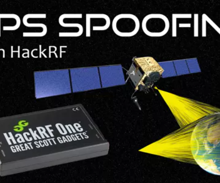

Full RCE VIA Kramer (IoT Devcies) boxA project intended for the Coventry University Talent Showcase event where we hacked into IoT (Internet of Things) e.g. the whiteboard. We managed to get full RCE without admintstrator priveladge for the kramer Go (debain) and the same for the windows version but pre-exisitng user needed with password. I also added an additional script to change the background photo and room information such as code and name.
DAB/FM Broadcaster via HackRF OneThis project transmits 2 FM signals and 2 DAB signals (clearly) on a chosen frequency/ensemble, station name and any extra details that can be added, using HackRF One devices. It runs on 1 python3 script with 4 HackRF's plugged in at once running on Linux (Ubuntu used). You can choose if you want what you want running e.g doesn't have to be all 4.

Spoofing GPSSimulating GPS co-ordinates on a Aston martin infotainment System using a HackRF One with modofied compents such as attenuators and TXCO PCB's
Controller & Client ScriptsA project intended for my 2nd year Ethical Hacking and Cyber Security degree which involves a client (can be multiple scripts each on different machines) and a controller that will control these client scripts. You can send live commands to each client, relay a command (send a command from one client to the next), send python commands and send general useful commands used for enumerating a machine. This can all be selected from the GUI (Graphical User Interface) menu when the script is run.
Rainbow Table GeneratorThe chosen hash function can create hashes of arbitrary length. Here, we're using just two bytes to limit the size of tables required, but the same methods would apply for larger hashes. You just need more time and space.
Implemented a website with a secure databaseFor one of my modules at Coventry University (Ethical Hacking and Cyber Security) I had to learn PHP, SQL, JavaScript, Html, CSS to create a website of my choose with a secure backend. I added a secure login with PHP session management that logged password securely in a database and had a leaderboard that interacted with the website score sheet. This also included different levels of access such as administrator.
Automotive Hacking presentation + SimulatorResearch into Automotive Hacking for the ComSec (Computer Science) society with a PowerPoint presentation and simulator to show these attacks in action. This includes but not limited to capturing CAN (Controller Area Network) packets and relaying them to a car. This can be done by finding the ID for reving a cars engine by monitoring the cars packets via wireshark or specified scripts and seeing the rev counter increase then capturing this output. The captured output(rev packets) are then re-sent showing the car to rev, turn, signal ect.
Privilege Escalation and Enumeration Script LEAP: Local Enumeration And Privesc. As a first-year project, I created a script using my knowledge of Python 3 and Linux, that when chosen could enumerate different operating systems and give a specific output depending on what was selected. This then chose which possible privilege escalation methods were available to use and adopt the appropriate function that would execute them.
3D survival game (A Level Dissertation)A project intended for my computer science A Level course where I self-taught myself C# and Unity. I attained a A* in this project and documented this in the word and pdf document above. Below shows a brief description of what I wanted to achieve and the reason why there was a gap in this part of the game market.

 Full RCE VIA Kramer (IoT Devcies) box
A project intended for the Coventry University Talent Showcase event where we hacked into IoT (Internet of Things) e.g. the whiteboard. We managed to get full RCE without admintstrator priveladge for the kramer Go (debain) and the same for the windows version but pre-exisitng user needed with password. I also added an additional script to change the background photo and room information such as code and name.
Full RCE VIA Kramer (IoT Devcies) box
A project intended for the Coventry University Talent Showcase event where we hacked into IoT (Internet of Things) e.g. the whiteboard. We managed to get full RCE without admintstrator priveladge for the kramer Go (debain) and the same for the windows version but pre-exisitng user needed with password. I also added an additional script to change the background photo and room information such as code and name.
 DAB/FM Broadcaster via HackRF One
This project transmits 2 FM signals and 2 DAB signals (clearly) on a chosen frequency/ensemble, station name and any extra details that can be added, using HackRF One devices. It runs on 1 python3 script with 4 HackRF's plugged in at once running on Linux (Ubuntu used). You can choose if you want what you want running e.g doesn't have to be all 4.
DAB/FM Broadcaster via HackRF One
This project transmits 2 FM signals and 2 DAB signals (clearly) on a chosen frequency/ensemble, station name and any extra details that can be added, using HackRF One devices. It runs on 1 python3 script with 4 HackRF's plugged in at once running on Linux (Ubuntu used). You can choose if you want what you want running e.g doesn't have to be all 4.
 Controller & Client Scripts
A project intended for my 2nd year Ethical Hacking and Cyber Security degree which involves a client (can be multiple scripts each on different machines) and a controller that will control these client scripts. You can send live commands to each client, relay a command (send a command from one client to the next), send python commands and send general useful commands used for enumerating a machine. This can all be selected from the GUI (Graphical User Interface) menu when the script is run.
Controller & Client Scripts
A project intended for my 2nd year Ethical Hacking and Cyber Security degree which involves a client (can be multiple scripts each on different machines) and a controller that will control these client scripts. You can send live commands to each client, relay a command (send a command from one client to the next), send python commands and send general useful commands used for enumerating a machine. This can all be selected from the GUI (Graphical User Interface) menu when the script is run.
 Implemented a website with a secure database
For one of my modules at Coventry University (Ethical Hacking and Cyber Security) I had to learn PHP, SQL, JavaScript, Html, CSS to create a website of my choose with a secure backend. I added a secure login with PHP session management that logged password securely in a database and had a leaderboard that interacted with the website score sheet. This also included different levels of access such as administrator.
Implemented a website with a secure database
For one of my modules at Coventry University (Ethical Hacking and Cyber Security) I had to learn PHP, SQL, JavaScript, Html, CSS to create a website of my choose with a secure backend. I added a secure login with PHP session management that logged password securely in a database and had a leaderboard that interacted with the website score sheet. This also included different levels of access such as administrator.
 Privilege Escalation and Enumeration Script
LEAP: Local Enumeration And Privesc. As a first-year project, I created a script using my knowledge of Python 3 and Linux, that when chosen could enumerate different operating systems and give a specific output depending on what was selected. This then chose which possible privilege escalation methods were available to use and adopt the appropriate function that would execute them.
Privilege Escalation and Enumeration Script
LEAP: Local Enumeration And Privesc. As a first-year project, I created a script using my knowledge of Python 3 and Linux, that when chosen could enumerate different operating systems and give a specific output depending on what was selected. This then chose which possible privilege escalation methods were available to use and adopt the appropriate function that would execute them.